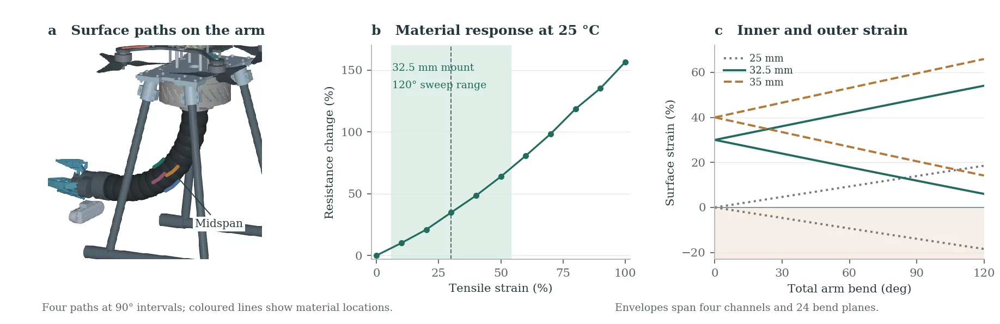
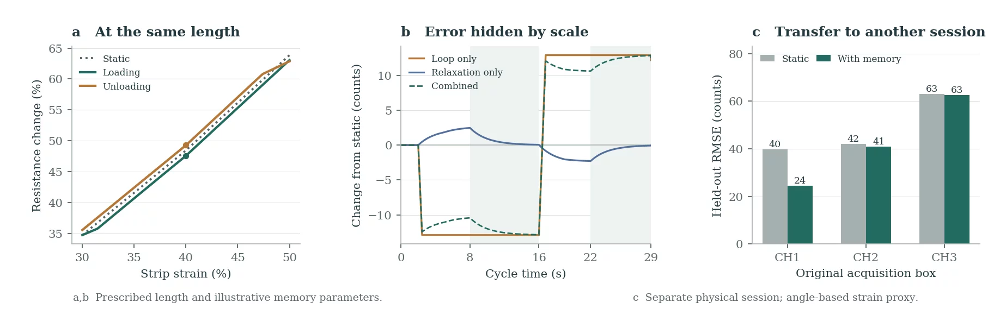
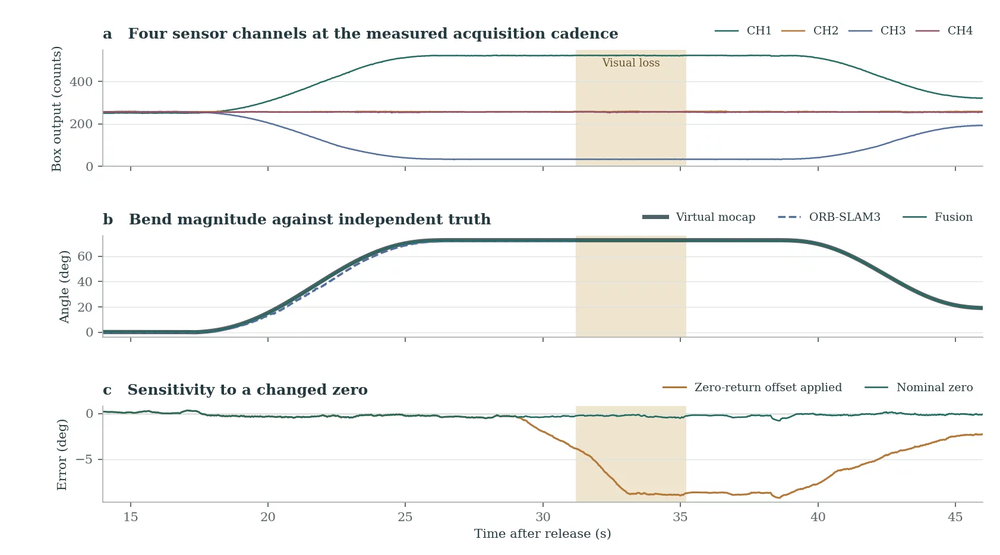

G1 · 电阻式应变本体感知 / 2026-11-19 22:52（北京时间）
中段预拉伸应变片怎样观测弯曲与回程？
把手册的电阻曲线、实物采集盒和同轨仿真对齐，比较四种安装跨度，并单独检验加载、卸载和定长保持。
大附件单独提供：原始表面轨迹、台架训练与留出测试、四次任务重放、动态传感器与留出检验。
模型与场景

01从贴片安装到电阻变化
MuJoCo 臂体中段的四条表面路径、25 °C 产品曲线及 24 个弯曲平面的应变范围。

曲线与机制图

01相同长度下的加载与卸载
受控往返的支路、定长保持，以及另一段真实采集记录的独立检验。


02四路采集值怎样变成弯角
同一条 G1 轨迹上对齐虚拟动捕、采集盒、腕部视觉与零点改变后的融合输出。

视频回放
0132 秒同步回放
同一时钟上的整机、腕部相机、四路模拟读数与弯曲量。此视频展示 30% 预拉伸的静态材料基线。
论文与报告
两页组会审阅
产品资料、四种安装、静态与动态传感器在遮挡中的结果，以及实机标定步骤。
数据及运行记录
几何与采样独立检查
包含触底与松弛、刚体变换不变性和遮挡覆盖。
台架角度预测与安装跨度
8 段训练、2 段验证、3 段整段测试。
四趟同轨对照与采集盒灵敏度
完整分阶段评分、各模式覆盖率与零点敏感度。
迟滞、回落及真实采集盒迁移
参数仅由第一个历史文件拟合，第二个文件检验。含同向与反向配对。
指令与真实运动轨迹的差异
已下发指令与虚拟动捕比较，和估计误差分别计算。
120° 扫角结果
四种预拉伸的内、外侧范围与首次松弛角度。
柔致采集盒历史特性
串口采样、三个实物输入的有效增益与跨记录残差。
厂家重复拉伸图的复读记录
第 2 页图上平台的像素坐标及读图精度。
原始证据包校验
四个归档文件的成员数、字节数和 SHA-256。
安装与同轨基线协议
区分设备规格、历史采集量与本次试验设定。
迟滞、时间尺度与适用范围
区分设备规格、历史采集量与本次试验设定。
原始表面轨迹
可复核数值与原始数组，单独下载。
台架训练与留出测试
可复核数值与原始数组，单独下载。
四次任务重放
可复核数值与原始数组，单独下载。
动态传感器与留出检验
可复核数值与原始数组，单独下载。